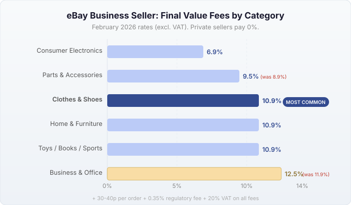
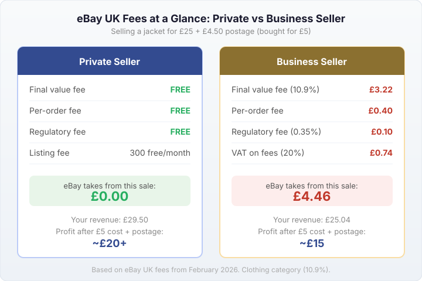
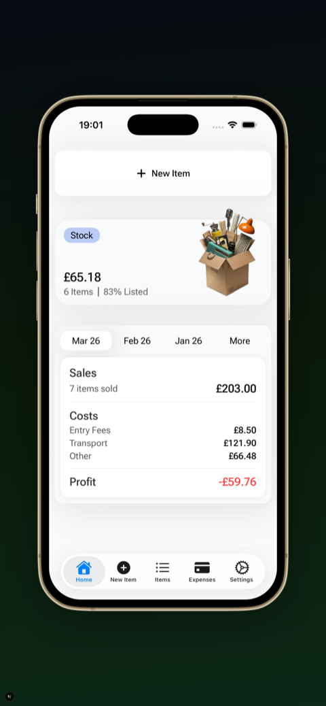

Last updated: 17 April 2026
eBay Selling Fees UK 2026: Complete Breakdown for Private and Business Sellers
If you sell on eBay UK, the fee structure changed again in February 2026 and it confuses a lot of people. The biggest thing most sellers miss: private sellers now pay zero final value fees. If you’re selling from home as an individual, eBay takes nothing when your item sells.
Business sellers still pay final value fees (the eBay final value fee is the main cost), and those went up slightly in some categories. Here’s the full breakdown so you know exactly how much eBay charges to sell — whether you’re a private or business seller. If you just want to calculate your fees quickly, use our eBay fee calculator.
Private sellers: it’s free to sell
Since October 2024, UK-based private sellers pay no final value fees and no regulatory operating fees. This applies to all categories except motors (cars, motorcycles, vehicles).
What you get as a private seller:
- 300 free listings per month (400 with an eBay Shop at £19.99/month)
- No final value fee when your item sells
- No regulatory operating fee
The only fees private sellers pay are:
- 35p per listing if you go over your 300 free monthly allowance
- 3% international fee if the buyer’s delivery address is outside the UK
- Optional listing upgrades like subtitles or promoted listings (most sellers don’t use these)
Business sellers: final value fees by category

If you’re registered as a business seller on eBay UK, you pay a final value fee on every sale. This is a percentage of the total sale amount (item price + postage + any applicable taxes).
As of February 2026, the main categories and their fees are:
| Category | Final value fee (excl. VAT) |
|---|---|
| Clothes, Shoes & Accessories | 10.9% |
| Home, Furniture & DIY | 10.9% |
| Toys & Games | 10.9% |
| Books, Comics & Magazines | 10.9% |
| Sporting Goods | 10.9% |
| Business, Office & Industrial | 12.5% (was 11.9% before Feb 2026) |
| Parts & Accessories (vehicles) | 9.5% (was 8.9% before Feb 2026) |
| Consumer Electronics | Varies by subcategory (typically 6.9-10.9%) |
VAT at 20% is added on top of these fees. So a 10.9% final value fee becomes about 13.1% in total if you’re VAT-registered, or if eBay adds VAT to the fee.
For the complete category list, check eBay UK — Fees for business sellers.
Per-order fee (the bit that changed in February 2026)
On top of the percentage-based final value fee, business sellers pay a fixed per-order fee:
- Orders under £10: 30p per order
- Orders over £10: 40p per order (was 30p before 12 February 2026)
This applies to every order regardless of category. It’s small on high-value items but adds up on cheaper ones.
Regulatory operating fee
Business sellers also pay a 0.35% regulatory operating fee on all sales. This covers eBay’s compliance costs and is calculated on the total sale amount including postage.
Private sellers don’t pay this fee.
Listing fees
Both private and business sellers get free listings each month:
- Private sellers: 300 free listings/month (400 with Shop subscription)
- Business sellers: Depends on Shop subscription tier
After your free allowance, each additional listing costs 35p. Multi-quantity listings and variations only count as one listing.
Automatic relists don’t use up your free allowance or cost extra. Manual relists do.
International fee
If a buyer’s delivery address is outside the UK, you pay an international fee on the total sale amount:
- Private sellers: 3% (all international destinations)
- Business sellers: 1.05% (Eurozone & Nordic countries), 1.8% (US & Canada), 2.0% (all other countries)
You can avoid this by excluding international delivery in your listing settings.
eBay Shop subscriptions
An eBay Shop gives you more free listings, a branded storefront, and (for private sellers) 100 extra free listings per month.
| Plan | Monthly cost (annual billing) | Free listings/month |
|---|---|---|
| Private seller Shop | £19.99/month | 400 (100 more than without) |
| Starter | £4.41/month | 250 |
| Basic | £19.54/month | 1,000 |
| Premium | £53.38/month | 10,000 fixed-price + 500 auction |
For most casual resellers selling under 300 items per month, you don’t need a Shop subscription at all.
Worked example: what does eBay actually take?
Let’s say you buy a jacket at a car boot sale for £5 and sell it on eBay for £25 with £4.50 postage charged to the buyer.
As a private seller
- Final value fee: £0 (private sellers sell free)
- Listing fee: £0 (within your 300 free listings)
- eBay takes: £0
- Your revenue: £29.50 (item + postage)
- After purchase price and postage cost: your profit depends on your actual Royal Mail/Evri cost
As a business seller (Clothes, Shoes & Accessories at 10.9%)
- Total sale: £29.50 (item + postage)
- Final value fee: £29.50 × 10.9% = £3.22
- Per-order fee: £0.40 (order over £10)
- Regulatory operating fee: £29.50 × 0.35% = £0.10
- VAT on fees (20%): £0.74
- Total eBay takes: £4.46
- Your revenue: £25.04
That’s before you account for the £5 purchase price, actual postage cost, packaging, and any entry fees or transport from sourcing. Your real profit on this item might be £10-12 as a business seller, or £15-17 as a private seller.
This is why knowing your real profit after all expenses matters. Use our eBay fee calculator to work out the exact fees for any item you’re thinking of listing.


How do eBay fees compare with other platforms?
| Platform | Seller fees |
|---|---|
| eBay UK (private seller) | Free (0%) |
| eBay UK (business seller) | ~13% total (final value + per-order + regulatory + VAT) |
| Vinted | 0% seller fee (buyer pays 3-8% protection fee) |
| Facebook Marketplace (local) | Free (0%) |
| Depop | 0% selling fee (buyer pays protection; seller pays 2.9% + 30p payment processing) |
| Gumtree | Free (private listings) |
For most resellers selling clothing and accessories, eBay as a private seller and Vinted are now both effectively free to sell on. The difference is audience — eBay has 30 million+ active buyers in the UK and supports every category, while Vinted is mainly fashion. For a detailed look at what Vinted charges, see our Vinted fees breakdown. And don’t forget postage — see our Royal Mail postage prices guide for current rates.
Private seller vs business seller: which am I?
eBay doesn’t decide this for you based on volume. It comes down to whether you’re selling personal items you already own (private) or buying items specifically to resell for profit (business).
HMRC has its own rules around this. If your reselling income exceeds the £1,000 trading allowance, you may need to register as self-employed. At that point, being a business seller on eBay makes more sense.
Many resellers start as private sellers and switch when their volume grows. There’s no requirement to switch at a specific number of sales. If you’re just starting out, see our beginner’s guide to selling on eBay UK.
Frequently asked questions
How much does eBay charge to sell in the UK?
Private sellers pay nothing — selling is free up to 300 listings per month. Business sellers pay 10.9-12.9% (excl. VAT) depending on category, plus 30p or 40p per order.
Do private sellers pay fees on eBay UK?
No. Since October 2024, UK private sellers pay no final value fees. Fees only apply if you exceed 300 listings/month, use optional upgrades, or ship internationally.
What changed with eBay UK fees in February 2026?
The per-order fee went from 30p to 40p on orders over £10 for business sellers. Some category fees also increased slightly.
Is it free to list on eBay UK?
Yes. Private sellers get 300 free listings/month. Business sellers get free listings based on their Shop tier. After the free allowance, it’s 35p per listing.
How does eBay managed payments work?
All eBay UK sellers now use eBay managed payments (no more PayPal). eBay collects the buyer’s payment, deducts fees, and sends the rest to your bank account. Payouts are typically processed daily, arriving in 1–2 business days. All the fees in this guide are deducted through managed payments automatically.
What is the eBay final value fee?
The final value fee is the main selling fee for business sellers. It’s a percentage of the total sale amount (item price + postage) that eBay deducts when your item sells. Rates range from 6.9% to 12.9% depending on category, with most categories at 10.9%. Private sellers don’t pay final value fees at all.
Are eBay fees worth it compared to Vinted or Facebook Marketplace?
If you’re a private seller, eBay is free — same as Vinted and Facebook Marketplace. The advantage is eBay’s huge buyer base (30M+ UK). If you’re a business seller paying ~13%, it depends on whether eBay’s audience generates enough extra sales to justify the fees. Many resellers list on all three platforms to maximise reach.
About the author
I’m Oleksandr, the developer behind FlipperHelper. My wife sells on eBay, Vinted, and Facebook Marketplace, and eBay’s fee structure is something we deal with constantly — especially the difference between private and business seller rates. I built the app to track real profit per item after all fees, postage, and sourcing costs, because eBay’s “sold for” price is never the full picture.
Track your real profit after eBay fees
Fees are just one part of the picture. Entry fees, transport, packaging, and postage all eat into your margin. FlipperHelper tracks every cost per item so you see your actual profit — not just what eBay shows you.
Download Free on the App StoreGet it Free on Google Play